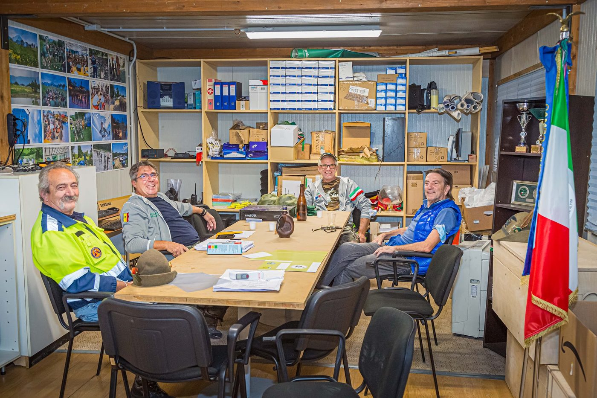
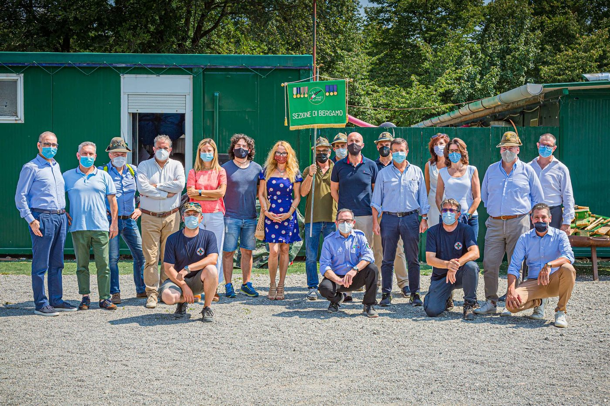
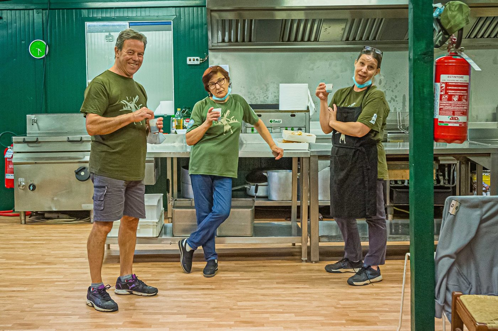

Volontariato, valori alpini e passione per i giovani: da oltre 70 anni il Gruppo Alpini di Almenno San Bartolomeo è al servizio della comunità.
Il Gruppo Alpini di Almenno San Bartolomeo è un gruppo di volontari che opera secondo i principi e i valori dell'Associazione Nazionale Alpini (ANA). Ha da poco festeggiato il 70° anniversario, celebrato con un libro commemorativo.
Oltre al Campo Scuola, il Gruppo è attivo nella Protezione Civile, organizza la tradizionale Sagra Alpina e promuove iniziative di solidarietà, come pasti caldi per persone senza fissa dimora e un raduno motociclistico di beneficenza a favore della Casa Alpina di Endine Gaiano.
Motto storico, inciso sul monumento del gruppo: "Ricordare i Morti Aiutando i Vivi".

Un percorso cresciuto edizione dopo edizione, fino a diventare il campo scuola più grande della provincia di Bergamo.
Prima edizione del Campo Scuola Giovani Alpini, nato dall'impegno del Gruppo Alpini di Almenno San Bartolomeo. Anno esatto [DA CONFERMARE CON L'ORGANIZZAZIONE].
Festeggiati i 12 anni del campo scuola con una festa e ospiti d'onore (fonte: L'Eco di Bergamo).
Edizione record: 670 ragazzi coinvolti, oltre 100 volontari tra caposquadra e istruttori. Diventa il campo scuola alpino più grande della provincia di Bergamo (su 27 campi complessivi), con un ospedale da campo gestito da infermieri e medici volontari.
Il campo torna dal 25 giugno al 2 agosto 2026, in sei turni per classe. Numero edizione esatto [DA CONFERMARE].
Disciplina, rispetto e senso del dovere trasmessi con l'esempio.
Vivere il fiume Brembo e il bosco come aula a cielo aperto.
Un percorso che accompagna dalla 3ª elementare fino allo staff da adulti.
60% dei ragazzi torna l'anno dopo: qui si costruiscono amicizie durature.
Il Gruppo è guidato dal Capogruppo, coadiuvato da un consiglio di oltre 10 persone tra operazioni, amministrazione e protezione civile.
Capogruppo Alpini Almenno San Bartolomeo, responsabile di operazioni e programma del campo scuola.

Oltre 10 consiglieri attivi su amministrazione, protezione civile e organizzazione eventi. Nomi [DA CONFERMARE].

Oltre 100 volontari tra caposquadra, istruttori, logistici e cuochi, molti dei quali ex partecipanti del campo.